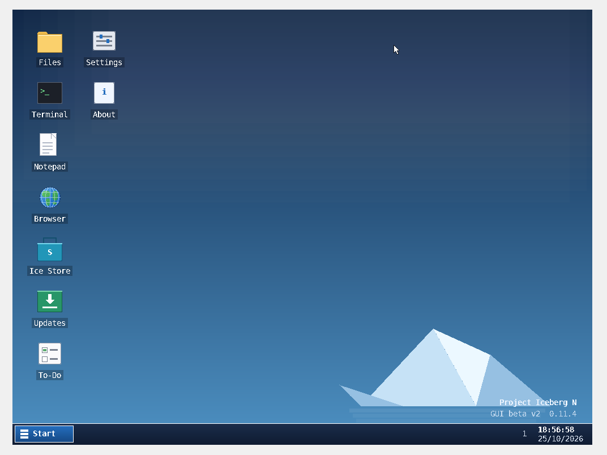

Project Iceberg OS
Project Iceberg OSEarly beta · version 0.11.4
A little OS.
Big ideas.
Meet Project Iceberg OS: a hobby operating system built from scratch, with a graphical desktop, its own web browser, an app store and a built-in update system.
Built from scratch · Tested in VirtualBox · x86 / BIOS

Explore the system
Discover Iceberg OS.
Choose a section to learn more about the project.
✦
Features
Explore the desktop, browser, networking, apps and updates.
▧
Screenshots
See the installer, account setup, desktop and Ice Store.
⚙
Requirements
Check hardware and virtual machine requirements.
➜
Get started
Follow the steps to boot Iceberg in VirtualBox.
♧
Community
Join the community, report bugs and share your work.
🧊
Ice Store
Browse free apps made for Iceberg OS ↗
Ready to try it?
Boot into Iceberg.
Download the latest ISO from GitHub Releases and try it in a virtual machine.